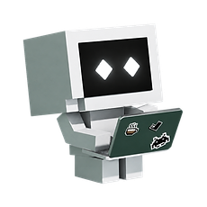
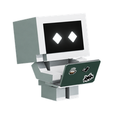
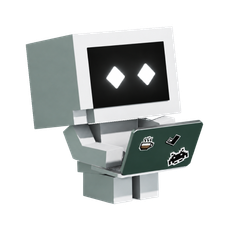
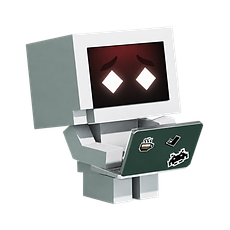
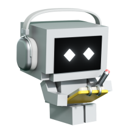

这些是原生资源，动画会自动循环。完整触发规则请读配套动作清单。默认3D的转头、眨眼和几何变化，以及页面等待/完成特效，不能仅靠这些图片说明；不要把资源循环时长当成业务状态持续时间。
1024条件彩蛋
1024-easter-egg.webp
85帧 · 3400毫秒/周期
普通繁忙

busy.webp
25帧 · 1000毫秒/周期
默认后备静帧

default.png
1帧 · 0毫秒/周期
悬停/拖动后备图

hover-drag.webp
42帧 · 1680毫秒/周期
超级繁忙

super-busy.webp
50帧 · 2000毫秒/周期
语音

voice.webp
76帧 · 3040毫秒/周期